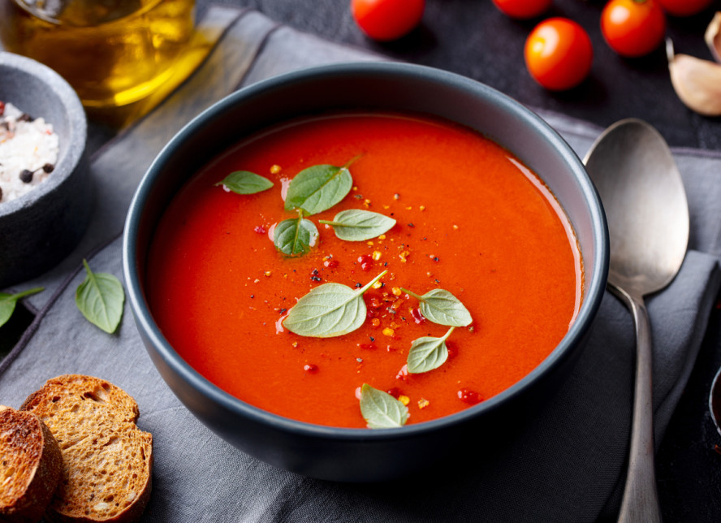

🏠 Home
Bell pepper soup

Description:
Bell pepper soup - a creamy soup made from bell peppers with the addition of potatoes. An aromatic, vegetarian cream soup.
Ingredients:
- 1 onion
- 2 tablespoons of butter (regular or plant-based)
- 1 tablespoon of olive oil
- 2 garlic cloves
- 0.5 teaspoon of thyme
- 1 teaspoon of sweet paprika
- A pinch of hot paprika
- 1 potato
- 6 bell peppers (red or a mix with yellow)
- 1 liter of broth
- 1 canned pelati tomato, 1 teaspoon of tomato paste, or 0.5 cup of passata
Steps:
- In a large, wide pot, melt the butter and add the olive oil. Then, add the peeled and diced onion. Sauté it, stirring occasionally, for about 5 minutes until softened. Add the peeled and halved garlic cloves and cook briefly together.
- Add thyme, sweet paprika, and hot paprika, mixing everything well. Add the peeled and diced potato, then toss in the bell peppers cut into approximately 4 cm (1.5-inch) pieces. Stir occasionally and sauté for about 5 minutes.
- Pour in the broth and bring to a boil. Add salt to taste (depending on how salty the broth is) and season with pepper. Cover and cook until the vegetables are soft, about 10 minutes. Towards the end of cooking, add the tomatoes.
- Blend into a creamy consistency (you can make it smooth, but it’s best with small pieces of bell pepper for texture). Serve with grated cheese and fresh herbs.